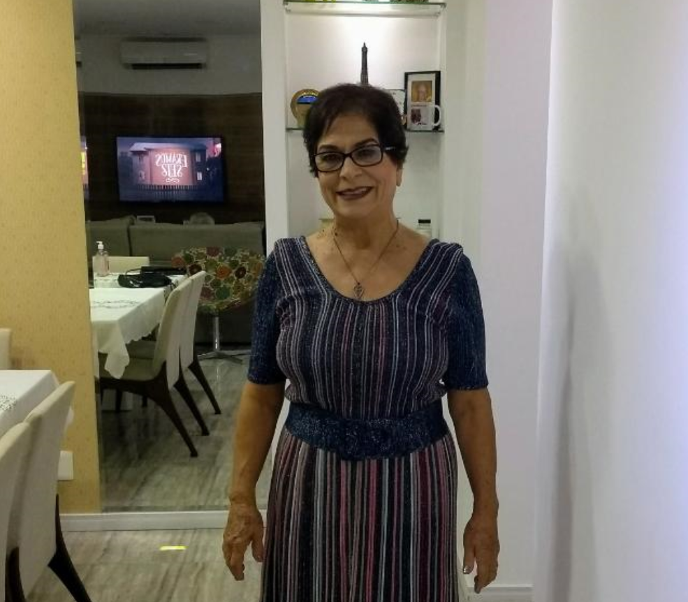
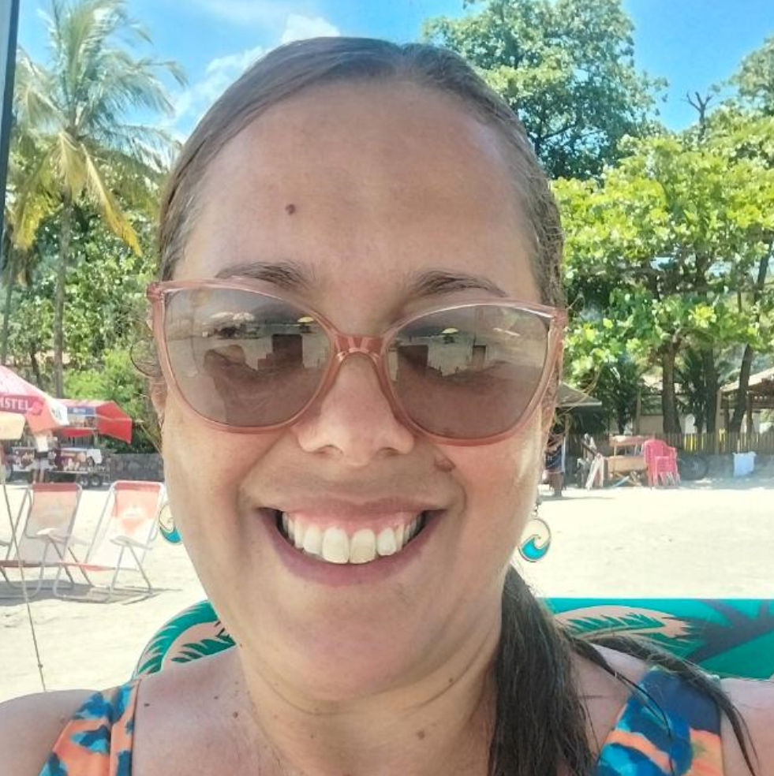
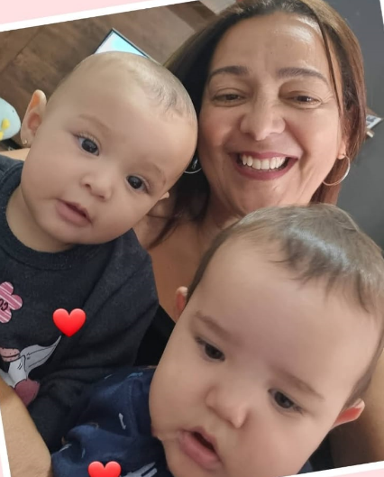
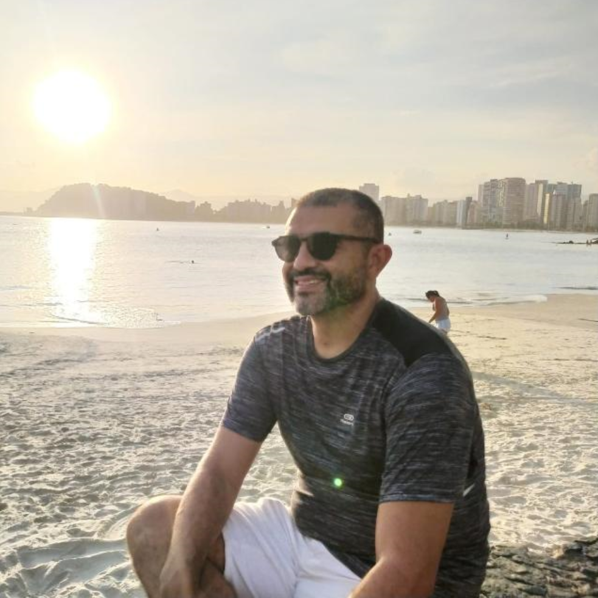
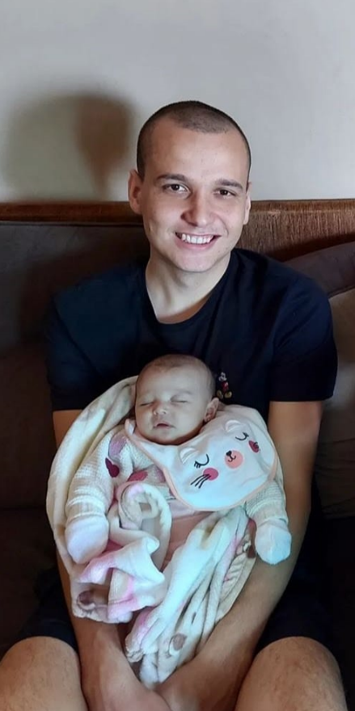
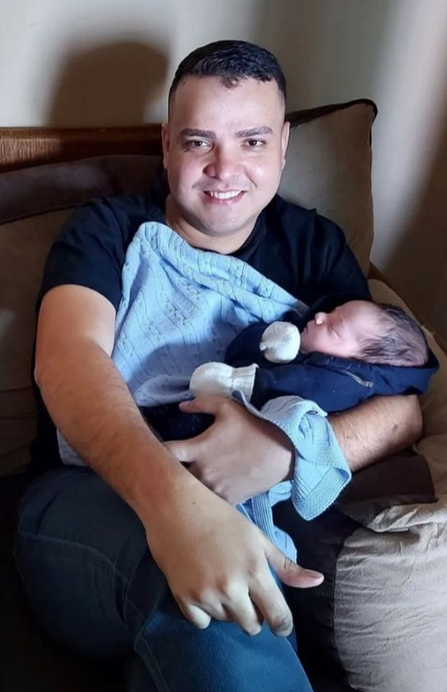
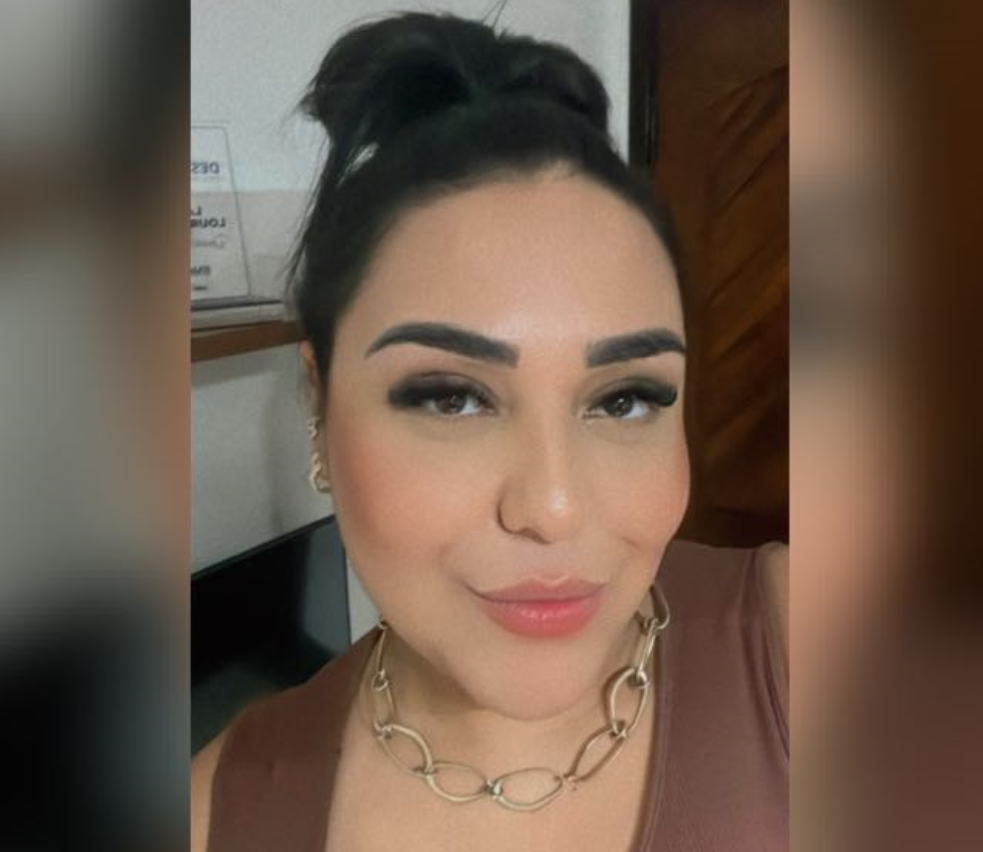
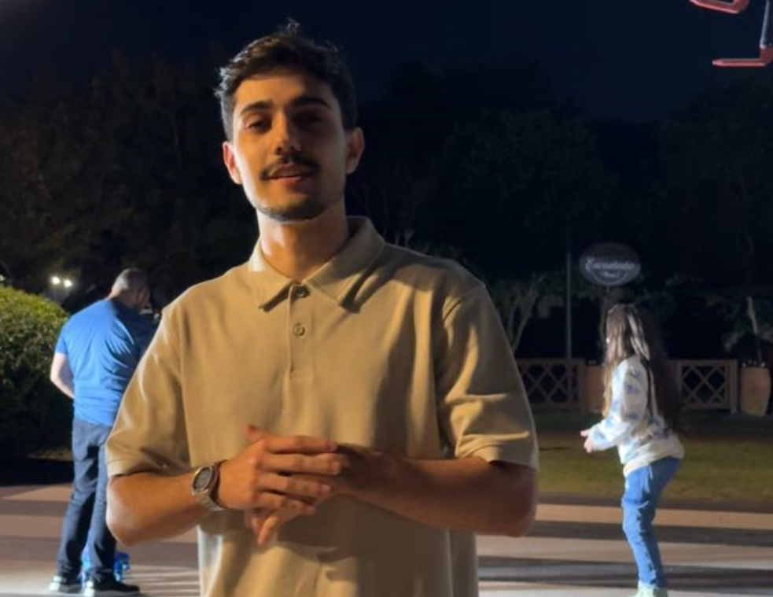
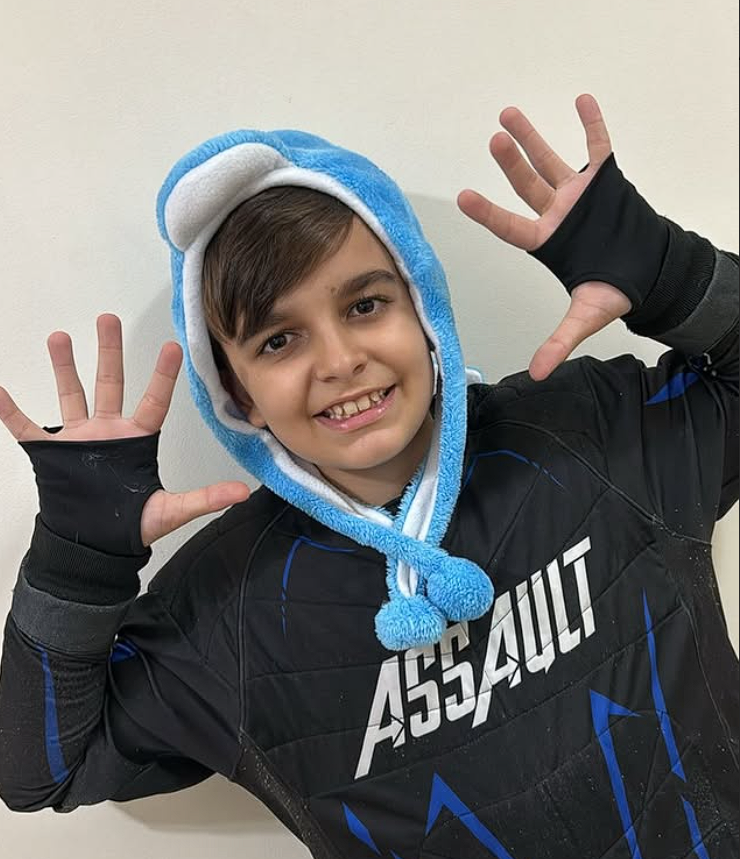
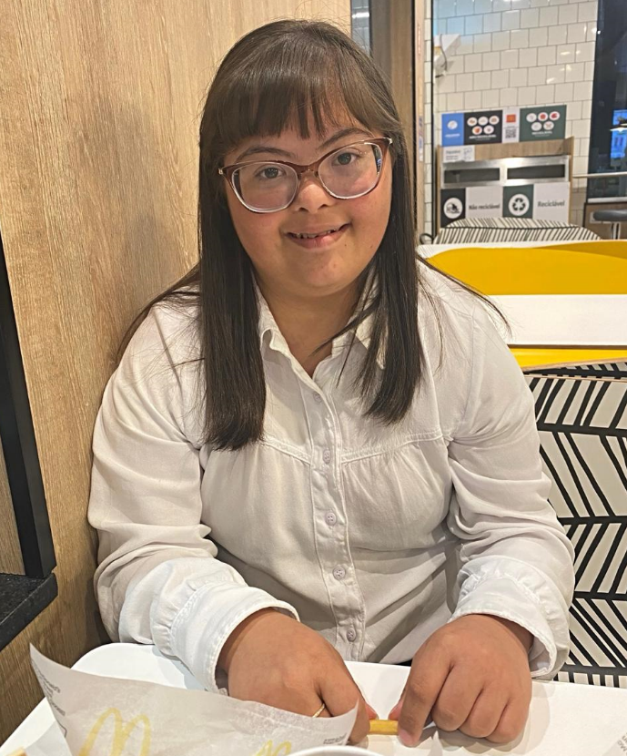

Paz do Senhor! Tudo bem? Me chamo Orlando, tenho 83 anos, sou servo do Deus vivo e corinthiano de coração.
Quando eu era jovem, estava passeando pela rua quando avistei Neuzinha. Ela estava rindo, com um sorriso lindo, e na hora me apaixonei. Nos apaixonamos e corri até o seu Zé e pedi a Neuzinha em casamento. Pouco tempo depois, fomos para o altar.
O meu pai espiritual e grande amigo, o missionário Manoel Melo, foi quem celebrou o nosso casamento. Naquela época, não tínhamos televisão, nem dinheiro... mas tínhamos muito amor para dar.
Desse amor nasceram os nossos filhos:
Noemi, a primogênita;
Karen, a disposta;
Orlando Júnior, o sábio;
Alexandre, o gênio;
e Leonardo, ovelha negra — mas ainda assim, amado como todos os outros.
E, é claro, não poderia deixar de mencionar o meu Senhor e Salvador, Jesus Cristo, a razão do meu viver. Aquele que me encontrou quando eu estava perdido, que me achou, me desarmou completamente e me olhou com olhos cheios de amor. Foi Ele quem me sustentou nos dias maus e me chamou para a Sua obra. Enfrentei lutas, provações e dificuldades por causa do evangelho, mas mesmo assim, meu coração se alegrava, pois eu sabia que não pertenço a este mundo. Sou apenas um peregrino a caminho de casa e que aguarda com esperança e ansiedade o dia em que Ele me chamará para a Sua glória, onde poderei adorá-Lo eternamente, face a face.
Vivo por Cristo, e por Cristo morrerei.
Família Querida
Neuza Silva
A mulher mais bela do universo, a perfeita criação de Deus. O amor da minha vida, minha companheira inseparável. Não fazemos nada um sem o outro, e só iremos nos separar quando Deus nos chamar de volta para casa, e mesmo assim, meu amor por você será eterno. Enquanto eu viver, vou te amar, cuidar de você e te proteger com todas as minhas forças. Você é o meu presente mais precioso, meu lar, meu tudo. Eu te amo, meu eterno amor.
Noemi
A minha primogênita é a minha paciente: sempre na dela, estudiosa — até mesmo após os 50 anos. Uma péssima motorista, mas dedicada a Deus e fã de filmes e séries japonesas. Te amo, filha.
Karen
Karen é minha cuidadora, minha serva, sempre disposta a servir sua família. Uma excelente mãe, uma excelente vó, cozinheira, arrumadeira e temente a Deus. Desde criança, sempre esteve disposta a fazer tudo o que o pai pedia, principalmente em relação às coisas da igreja — muito obediente. Te amo, filha.
Junior
Junior nasceu com a minha cara de imediato a Neuza colocou o nome de "Orlando Junior" meu filho é um homem de Deus, passou por muita coisa, mas Deus o sustentou e todos falam o quão libertador é conversar com ele, pois é um homem onde Deus trabalhou e ensinou. Sempre ocupado, mas nunca deixa de amar e servir aos outros. Te amo, filho
Alexandre
Alexandre é o meu aventureiro. Não tem medo de nada e está sempre se arriscando. Nunca me esqueço de quando, ainda jovem, tentou fazer rafting sozinho — eu tive que pular na cachoeira para salvá-lo! Ele é meu filho amado, muito inteligente, um gênio, um homem de Deus e extremamente corajoso. Tenho muito orgulho do homem que ele se tornou. Te amo, filho
Leonardo

Leonardo é o meu caçula. Ele é adotado — a mãe biológica dele viu a Neuza no hospital, percebeu como Deus estava prosperando a nossa família e pediu que o Leonardo fosse criado por nós. Aceitamos de coração, e seus irmãos o acolheram com amor, apesar de ser a ovelha negra da família. Ele é muito inteligente, bem-sucedido e rico. O pai te ama, filho.
Vinicius
Vinicius o primogênito dos meus netos, nunca esqueço o dia do seu nascimento, o vô sempre ora por você e fico muito feliz como você puxou a disposição da sua mãe em todo momento querer servir as pessoas. Te amo, meu neto
Gabriela
Gabi é minha neta linda, completamente ambiciosa e muito inteligente. Sempre soube se virar sozinha, mas sempre foi amorosa com o vô. O vô ora sempre por você. Continue estudando, trabalhando e focada, minha menina. Te amo, minha neta linda.
Henrique
Henrique sempre foi muito curioso. Deu um bom trabalho na escola — até repetiu de ano —, mas desde pequeno mostrava vontade de aprender de tudo, especialmente instrumentos musicais. Sempre foi um menino sossegado, e hoje é um precioso servo de Jesus na igreja, um provedor dedicado e um excelente pai. Que Deus continue te abençoando, meu neto. Eu te amo.
Raphael

Raphael é o neto que puxou a feiura do pai. Mas é um homem de coração precioso: humilde, cuidador e servo de Jesus. Ama música, sempre estudou com dedicação e sabe tocar praticamente todos os instrumentos. E agora resolveu seguir os passos do irmão e quer virar programador também. O vô está só esperando você me dar um bisneto! Te amo, meu neto.
Lais
Laís é minha menina talentosa. Toca muito bem os instrumentos e, ainda por cima, Deus lhe concedeu um dom lindo de cantar. Uma ministra de louvor maravilhosa, que carrega uma função vinda dos céus. O vô ama ver tudo o que Deus tem feito na sua vida. Continue estudando, firme em tudo. Deus vai te prosperar muito, minha neta. Te amo.
Livia
Lívia é um gênio! Puxou a mãe todinha no gosto pelos estudos — sempre teve prazer em aprender. Hoje, minha neta se tornou uma enfermeira maravilhosa. Ela é linda, cuidadosa e amorosa com a família. Tenho muito orgulho de tudo o que ela conquistou, viajando pelo Brasil por causa dos estudos. Que Deus te abençoe, minha neta. Te amo!
Rodrigo
Rodrigo é um obreiro, um servo do Deus vivo. Meu galego me lembra na minha mocidade, é o mais engraçado dos netos! Muito inteligente, embora às vezes cometa umas "burrices". Mas meu neto é uma bênção, cada dia amadurecendo e se tornando um grande homem. Oro a Deus todos os dias pela vida dele, e sei que será muito sucedido em toda sua vida
Victor
Vitinho é a paixão do vô. Foi morar no Sul por causa de sua noiva que, aliás, é linda! Estou muito orgulhoso do meu neto, e ao mesmo tempo sinto muita falta dele. O vô espera com alegria poder celebrar o casamento de vocês e te ver de novo. Um rapaz inteligente, bonito, amoroso e temente a Deus. Te amo, meu neto!
Gustavo
Gustavo puxou o pai: é super inteligente, um jovem conhecido e querido por todos. É espertinho, igual ao pai. O vô te ama muito e fica feliz quando você vem me visitar e cuida de mim. Te amo, meu neto. Você vai ser muito próspero!
Julia
Kimberly
A Kimberly é a prova viva do amor de Deus na vida das pessoas. Uma menina cheia de graça, que exala ternura por onde passa. Amorosa com todos, sempre com uma palavra doce e um coração aberto. Além de linda e inteligente, é uma jovem com princípios, que sabe o valor da fé, da família e da obediência a Deus. O vô é completamente apaixonado por ela.
Mocidade dos meus filhos

Eu e a Neuza no nosso primeiro cruzeiro

Advinha qual dessas é a Neuza.

Viagem em familia.

Meus meninos.

Meus 50 anos de ministério.

Meus netos em Olimpia

Minha princesa

Primeira visita ao estádio do Corinthians

Eu e meu irmão

Victor sendo apresentado

Nosso primeiro carro